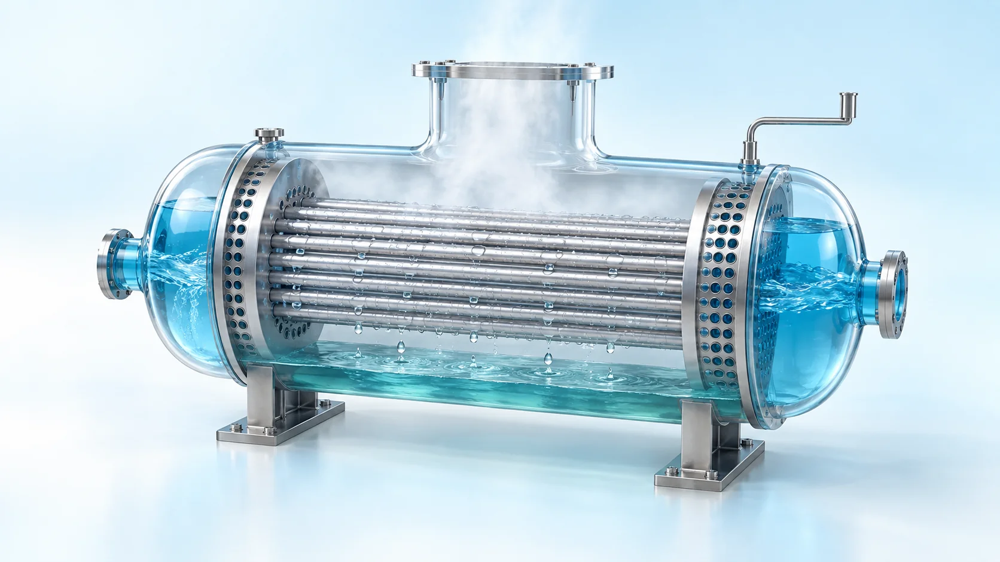
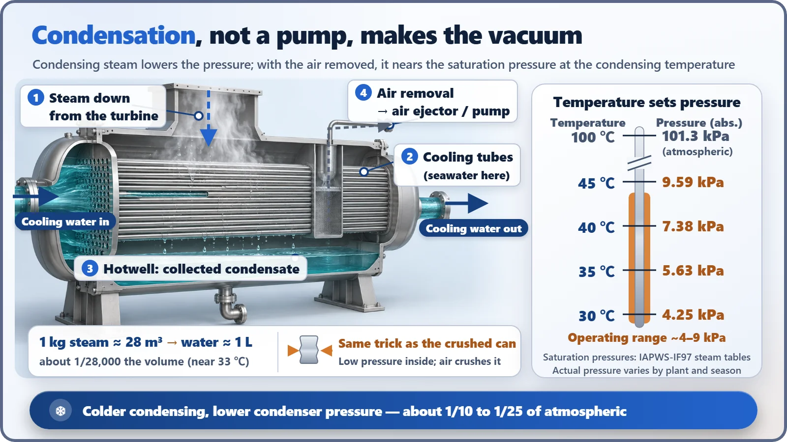
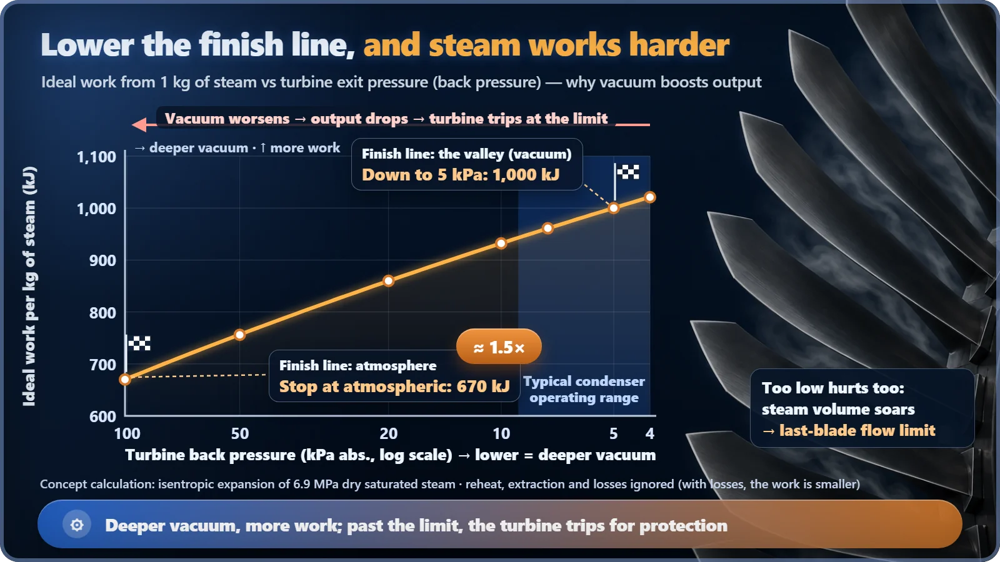

Plant Operation, Control & the Grid · 234
Why an Empty Can Crumples with a Pop — The Secret of How a Condenser Keeps Its Vacuum
Condensation makes the vacuum, air removal keeps it, and a deeper vacuum lets the same steam do more work in the turbine.

A condenser's vacuum is made by condensation, not by a pump. When steam turns back into water its volume shrinks about 28,000-fold, so the pressure falls to the saturation pressure of the condensing temperature, roughly 4 to 9 kPa. Air ejectors only remove the air that leaks in, and the low back pressure lets each kilogram of steam do about 1.5 times more work in the turbine. [1]
The can that crumples by itself
There's an experiment you may have seen in science class. Put a spoonful of water in an empty aluminum can and heat it on the stove until it's billowing steam. Then grab the can with tongs and plunge it, opening down, into a basin of cold water. Pop! The can crumples like a sheet of paper.
Who squeezed it? There was no pump, no hand. The culprit is the steam inside the can. When it touches the cold water, the steam turns back into droplets all at once, the inside of the can is left nearly empty, and the outside air mercilessly crushes into that empty space.
A nuclear power plant has a device that repeats this experiment 24 hours a day, nonstop, on a giant scale: the condenser. Today we'll follow why the inside of a condenser is always kept at a vacuum (a pressure far below atmospheric), and why that matters so much to the plant.
A room's worth of steam into 1 liter of water
A condenser does exactly what its name says: it turns steam back into water. Steam that has finished passing through the turbine comes down into a big steel shell right below it, where cold seawater flows through tens of thousands of thin tubes running across the shell. As soon as the steam touches the tube surfaces, it becomes droplets and falls into the water box at the bottom (the hotwell).
The change in volume here is enormous. Near 33°C, 1 kg of steam takes up about 28 m³, enough to fill a small room. Turned into water, it's about 1 liter. The volume shrinks to a whopping 1/28,000. Inside a sealed shell, when the same amount of steam suddenly takes up that much less space, the pressure has no choice but to plunge. It's the same thing that happens to the can. [1]
So the condenser's vacuum during operation isn't something forcibly sucked out by someone. Condensation makes it by itself.

What sets the pressure: the temperature at which steam turns to water
So how low does the pressure go? In a vessel holding both water and steam, the pressure is set by the boiling pressure at the temperature where the steam condenses, the saturation pressure. At atmospheric pressure (about 101 kPa) water boils at 100°C, but lower the pressure and the boiling point drops along with it.
- 30°C → about 4.2 kPa
- 35°C → about 5.6 kPa
- 40°C → about 7.4 kPa
Real condensers run at roughly 4 to 9 kPa depending on the plant and the season, about one-tenth to one-twenty-fifth of atmospheric pressure. What controls the condensing temperature is how cold and how plentiful the cooling water in the tubes is (for heat to cross, the tube surface has to be a bit colder than the steam). How cooling-water temperature affects efficiency is a story worth its own telling, so for now just remember: "the colder, the lower the pressure." [2] [3]
What happens when you move the finish line down into the valley
The reason for pushing the pressure so low is the turbine. A turbine is a machine whose blades are pushed around as steam expands from high pressure to low pressure. The pressure at the outlet is called the back pressure, and the lower it is, the longer the stretch over which the steam can expand.
Picture a ski slope. Keep the starting gate (the steam inlet pressure) where it is and move only the finish line (the back pressure) down into the valley, and the drop between start and finish grows, so you get a much longer, faster run. That drop corresponds to the work 1 kg of steam does on the turbine.
Calculating an ideal expansion for pressurized-water-reactor steam conditions (about 6.9 MPa saturated steam), 1 kg of steam does about 670 kJ of work if it expands only down to atmospheric pressure, but about 1,000 kJ if it expands down to 5 kPa. That's about 1.5 times the work from the same steam. Real plants, with various losses, get smaller numbers than this, but the direction is clear. Vacuum is a sturdy lever for making more electricity from the same reactor heat. [1]

The vacuum's enemy: air seeping in through gaps
The problem is air. The condenser and turbine exhaust sit far below outside pressure, so air slowly leaks in through tiny gaps such as the seals where the turbine shaft passes through and the joints in piping. At these temperatures air is a non-condensable gas: it doesn't turn into liquid, so it just builds up. The accumulated air pushes the pressure up and blankets the tube surfaces, keeping steam from reaching them.
That's why a condenser has air ejectors (devices that blast high-pressure steam through a nozzle to drag air out) or vacuum pumps that continuously pull out the leaked-in air, along with a little water vapor, as fast as it comes in. Pulling out large amounts of air to establish the initial vacuum when the plant first starts up is also their job. In short, condensation makes the vacuum, and air removal keeps it. As a side note, in pressurized water reactors a radiation monitor on this exhaust doubles as a sentry that can detect a leak in the steam generator tubes. [3] [5]
When the vacuum fails, the turbine stops first
If the cooling-water supply is lost or the air removal system fails, condenser pressure rises. As back pressure climbs, output drops first, and past a limit the protection system automatically trips the turbine. This prevents the long last-stage blades of the low-pressure turbine from overheating or vibrating and protects the exhaust section from overpressure. The exact kPa at which the trip happens is set differently at each plant.
Loss of condenser vacuum is one of the standard operating transients analyzed ahead of time in a nuclear plant's safety analysis report. Normally, when the turbine stops, steam from the steam generators is sent straight to the condenser, bypassing the turbine (turbine bypass), to be cooled. Without a vacuum, that route can't be used. So the design shuts down the reactor and removes the remaining heat by releasing steam through the atmospheric dump valves. [4]
Three easy mix-ups
- "Vacuum pumps make the vacuum?" The star is condensation. The pumps handle the initial evacuation at startup and clean out air that leaks in.
- "A vacuum means it's empty inside?" It's full of low-pressure steam and water. Vacuum just means below atmospheric pressure.
- "The lower the back pressure, the better, always?" Too low, and the steam volume balloons until it hits the flow limit the last-stage blades can handle. Each design has its own sweet spot.
A power plant's wisdom in a single can
Think back to the can crumpling in cold water. The condenser doesn't waste the force of that pop; it uses it to lower the turbine's finish line. Condensation makes the vacuum, air ejectors guard it, and if the vacuum fails, the turbine is stopped first to protect the equipment. Down in the plant, that big steel shell quietly squeezes more electricity out of the same heat.